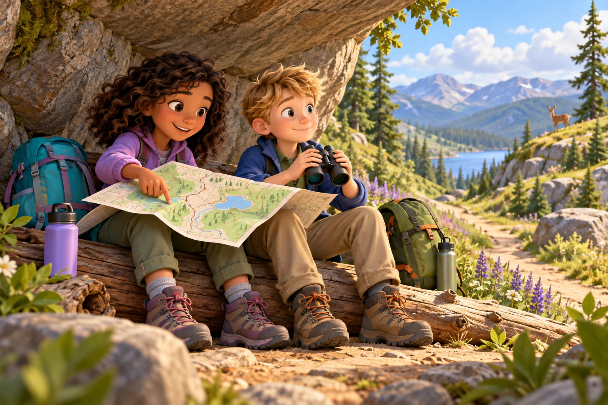

Eight adventures · 480 questions · A & AA
Choose the word that shows where, when or which way.

Use clues to choose who, what, where, when, why or how.
Listen to words and identify their consonant digraphs.
Choose clear, polite classroom words and requests.
Match action words to the time in a sentence.
Choose words that show reasons, results, choices and contrasts.
Drag phrases to add who, what, where, when and why.
Use weather pictures and clues to name conditions, storms and forecasts.